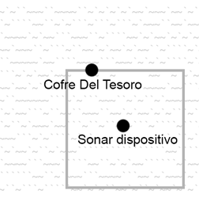
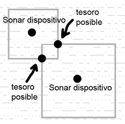
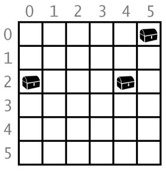
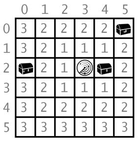

|
|
Capítulo 13 |
Búsqueda del Tesoro con Sonar |

Temas Tratados En Este Capítulo:
· Estructura de Datos
· El método de listas remove()
· El método de cadenas isdigit()
· La función sys.exit()
El juego en este capítulo es el primero en hacer uso de las Coordenadas Cartesianas aprendidas en el Capítulo 12. El juego también posee estructuras de datos (que es sólo un modo de decir variables complejas tales como las que contienen listas de listas.) A medida que los juegos que programas se hacen más complicados, necesitarás organizar tus datos en estructuras de datos.
En este juego, colocamos coloca dispositivos de sonar en varios lugares en el océano para localizar cofres de tesoros hundidos. El sonar es una tecnología que utilizan los barcos para localizar objetos debajo del mar. Los dispositivos de sonar (en este juego) le dirán al jugador que tan lejos están del tesoro más cercano, pero no en qué dirección. Pero al colocar diversos sonares, el jugador puede deducir donde se encuentra el tesoro.
Hay tres cofres a recuperar, pero el jugador sólo tiene dieciséis dispositivos de sonar para encontrarlos. Imagina que no puedes ver el cofre de tosoro en la siguiente imágen. Debido a que cada sonar puede sólo encontrar distancia, no dirección, los posibles lugares en que podría encontrarse el tesoro corresponden a un cuadrado alrededor del dispositivo (ver Figura 13-1).

Figura 13-1: El área cuadrada del sonar toca el (oculto) cofre del tesoro.

Figura 13-2: Combinando múltiples áreas cuadradas se muestra donde el tesoro puede estar.
Pero múltiples dispositivos de sonar trabajando en conjunto pueden reducir el área a un punto exacto donde las áreas se intersecten. Ver Figura 13-2. (Normalmente estas áreas serían circulares, pero en este juego utilizaremos cuadrados para facilitar la programación.)
Ejecución de prueba de Búsqueda del Tesoro con Sonar
¡ S O N A R !
¿Te gustaría ver las instrucciones? (sí/no)
no
1 2 3 4 5
012345678901234567890123456789012345678901234567890123456789
0 `~~~`~~~`~`~~`~~~~~`~``~~~~`~`~~~`~``~``~~````~`~```~`~~~~`` 0
1 ~`~~~```~~~~`~`~~`~``~`~~```~`~`~~`~`~~~~~~`~`````~`~~`~~~~` 1
2 `~``~``~~~`~``~`~`~``~`````~~~~~~~~~`~`~~`~``~~~~~```~~`~``` 2
3 ``~`~~``~`~``~`~`~`~~`~`~~`~`~``~~~`~``~````~``````~~~~``~`` 3
4 ``~~`~~~``~``~~````~`~`~`~``~~~``~~```~`~~`~~`~`~`~~`~~~~``` 4
5 ~~```~~~`~`~~``~`~``~```~`~~`~~~~~`~~``~`~`~~~`~~`~`~`~`~~~` 5
6 ``~~`````~~~~`~`~~~```~~~~`~~`~~`~~```~~`~~~`~~~``~`~~~``~~~ 6
7 `~`````````~```~``~``~~`~~~~`~~``~``~~~```~`~~`~``~``~~```~~ 7
8 `~````~```~`~~`~~~`~~``~~~``~`~``~~~``~`~`````~`~~```~`~~~~` 8
9 ~```~~`~`~``~``~~``~``~```~`~``~~~~`~`~`~~~`~`~`~`~~~``~~``` 9
10 ```~`~```~``~``~`~~`~``~````~``~~~`~~`~~``~~~~`~~~`~`~~````~ 10
11 ```~```~~~`~```~~`~~~`~`````~`~~`~`~~`~~`~`~~`~~~````~````~` 11
12 ~~~`~`~~~``~~~~~~`~~~``~`~`~~`~`~~`~```~~~```~~`~~`~``~``~`~ 12
13 `~~````~~``~```~~~`~```~`~~~~~~~~~`~~``~~~~~`````~`~`~``~~~~ 13
14 `~~`~`~````~```~`~`~```~~`~~~~`~```~``~``~``~~~````~~``````~ 14
012345678901234567890123456789012345678901234567890123456789
1 2 3 4 5
Aún tienes 16 dispositivos sonar. Falta encontrar 3 cofres.
¿Dónde quieres dejar caer el siguiente dispositivo sonar? (0-59 0-14) (o teclea salir)
10 10
1 2 3 4 5
012345678901234567890123456789012345678901234567890123456789
0 `~~~`~~~`~`~~`~~~~~`~``~~~~`~`~~~`~``~``~~````~`~```~`~~~~`` 0
1 ~`~~~```~~~~`~`~~`~``~`~~```~`~`~~`~`~~~~~~`~`````~`~~`~~~~` 1
2 `~``~``~~~`~``~`~`~``~`````~~~~~~~~~`~`~~`~``~~~~~```~~`~``` 2
3 ``~`~~``~`~``~`~`~`~~`~`~~`~`~``~~~`~``~````~``````~~~~``~`` 3
4 ``~~`~~~``~``~~````~`~`~`~``~~~``~~```~`~~`~~`~`~`~~`~~~~``` 4
5 ~~```~~~`~`~~``~`~``~```~`~~`~~~~~`~~``~`~`~~~`~~`~`~`~`~~~` 5
6 ``~~`````~~~~`~`~~~```~~~~`~~`~~`~~```~~`~~~`~~~``~`~~~``~~~ 6
7 `~`````````~```~``~``~~`~~~~`~~``~``~~~```~`~~`~``~``~~```~~ 7
8 `~````~```~`~~`~~~`~~``~~~``~`~``~~~``~`~`````~`~~```~`~~~~` 8
9 ~```~~`~`~``~``~~``~``~```~`~``~~~~`~`~`~~~`~`~`~`~~~``~~``` 9
10 ```~`~```~5`~``~`~~`~``~````~``~~~`~~`~~``~~~~`~~~`~`~~````~ 10
11 ```~```~~~`~```~~`~~~`~`````~`~~`~`~~`~~`~`~~`~~~````~````~` 11
12 ~~~`~`~~~``~~~~~~`~~~``~`~`~~`~`~~`~```~~~```~~`~~`~``~``~`~ 12
13 `~~````~~``~```~~~`~```~`~~~~~~~~~`~~``~~~~~`````~`~`~``~~~~ 13
14 `~~`~`~````~```~`~`~```~~`~~~~`~```~``~``~``~~~````~~``````~ 14
012345678901234567890123456789012345678901234567890123456789
1 2 3 4 5
Tesoro detectado a una distancia 5 del dispositivo sonar.
Aún tienes 15 dispositivos sonar. Falta encontrar 3 cofres.
¿Dónde quieres dejar caer el siguiente dispositivo sonar? (0-59 0-14) (o teclea salir)
15 6
1 2 3 4 5
012345678901234567890123456789012345678901234567890123456789
0 `~~~`~~~`~`~~`~~~~~`~``~~~~`~`~~~`~``~``~~````~`~```~`~~~~`` 0
1 ~`~~~```~~~~`~`~~`~``~`~~```~`~`~~`~`~~~~~~`~`````~`~~`~~~~` 1
2 `~``~``~~~`~``~`~`~``~`````~~~~~~~~~`~`~~`~``~~~~~```~~`~``` 2
3 ``~`~~``~`~``~`~`~`~~`~`~~`~`~``~~~`~``~````~``````~~~~``~`` 3
4 ``~~`~~~``~``~~````~`~`~`~``~~~``~~```~`~~`~~`~`~`~~`~~~~``` 4
5 ~~```~~~`~`~~``~`~``~```~`~~`~~~~~`~~``~`~`~~~`~~`~`~`~`~~~` 5
6 ``~~`````~~~~`~4~~~```~~~~`~~`~~`~~```~~`~~~`~~~``~`~~~``~~~ 6
7 `~`````````~```~``~``~~`~~~~`~~``~``~~~```~`~~`~``~``~~```~~ 7
8 `~````~```~`~~`~~~`~~``~~~``~`~``~~~``~`~`````~`~~```~`~~~~` 8
9 ~```~~`~`~``~``~~``~``~```~`~``~~~~`~`~`~~~`~`~`~`~~~``~~``` 9
10 ```~`~```~5`~``~`~~`~``~````~``~~~`~~`~~``~~~~`~~~`~`~~````~ 10
11 ```~```~~~`~```~~`~~~`~`````~`~~`~`~~`~~`~`~~`~~~````~````~` 11
12 ~~~`~`~~~``~~~~~~`~~~``~`~`~~`~`~~`~```~~~```~~`~~`~``~``~`~ 12
13 `~~````~~``~```~~~`~```~`~~~~~~~~~`~~``~~~~~`````~`~`~``~~~~ 13
14 `~~`~`~````~```~`~`~```~~`~~~~`~```~``~``~``~~~````~~``````~ 14
012345678901234567890123456789012345678901234567890123456789
1 2 3 4 5
Tesoro detectado a una distancia 4 del dispositivo sonar.
Aún tienes 14 dispositivos sonar. Falta encontrar 3 cofres.
¿Dónde quieres dejar caer el siguiente dispositivo sonar? (0-59 0-14) (o teclea salir)
15 10
1 2 3 4 5
012345678901234567890123456789012345678901234567890123456789
0 `~~~`~~~`~`~~`~~~~~`~``~~~~`~`~~~`~``~``~~````~`~```~`~~~~`` 0
1 ~`~~~```~~~~`~`~~`~``~`~~```~`~`~~`~`~~~~~~`~`````~`~~`~~~~` 1
2 `~``~``~~~`~``~`~`~``~`````~~~~~~~~~`~`~~`~``~~~~~```~~`~``` 2
3 ``~`~~``~`~``~`~`~`~~`~`~~`~`~``~~~`~``~````~``````~~~~``~`` 3
4 ``~~`~~~``~``~~````~`~`~`~``~~~``~~```~`~~`~~`~`~`~~`~~~~``` 4
5 ~~```~~~`~`~~``~`~``~```~`~~`~~~~~`~~``~`~`~~~`~~`~`~`~`~~~` 5
6 ``~~`````~~~~`~O~~~```~~~~`~~`~~`~~```~~`~~~`~~~``~`~~~``~~~ 6
7 `~`````````~```~``~``~~`~~~~`~~``~``~~~```~`~~`~``~``~~```~~ 7
8 `~````~```~`~~`~~~`~~``~~~``~`~``~~~``~`~`````~`~~```~`~~~~` 8
9 ~```~~`~`~``~``~~``~``~```~`~``~~~~`~`~`~~~`~`~`~`~~~``~~``` 9
10 ```~`~```~O`~``O`~~`~``~````~``~~~`~~`~~``~~~~`~~~`~`~~````~ 10
11 ```~```~~~`~```~~`~~~`~`````~`~~`~`~~`~~`~`~~`~~~````~````~` 11
12 ~~~`~`~~~``~~~~~~`~~~``~`~`~~`~`~~`~```~~~```~~`~~`~``~``~`~ 12
13 `~~````~~``~```~~~`~```~`~~~~~~~~~`~~``~~~~~`````~`~`~``~~~~ 13
14 `~~`~`~````~```~`~`~```~~`~~~~`~```~``~``~``~~~````~~``````~ 14
012345678901234567890123456789012345678901234567890123456789
1 2 3 4 5
¡Has encontrado un cofre del tesoro hundido!
Aún tienes 13 dispositivos sonar. Falta encontrar 2 cofres.
¿Dónde quieres dejar caer el siguiente dispositivo sonar? (0-59 0-14) (o teclea salir)
...salteamos unos pasos para acortar...
1 2 3 4 5
012345678901234567890123456789012345678901234567890123456789
0 `~~~`~~~`~`~~`~~~~~`~``~~~~`~`~~~`~``~``~~````~`~```~`~~~~`` 0
1 ~`~~~```~~~~`~`~~`~``~`~~```~O~`~~`~`~~~~~~`~`````~`~~`~~~~` 1
2 `~``~``~~~`~``~`~`~``~`````~~O~~~O~~`~`~~`~``~~~~~```~~`~``` 2
3 ``~3~~``8`~``~`~`~`~~`~`~~`~`~``~~~`~`O~````~``````~~~~``~`` 3
4 ``~~`~~~``~``~~````~`~`~`~O`~~O``~~```~`~~`~~`~`~`~~`~~~~``` 4
5 ~~```~~~`~`~~``~`~``~```~`~~`~~~~~`~~``~`~`~~~`~~`~`~`~`~~~` 5
6 ``~~`````~~~~`~O~~~```~~~~`~~`~~`~~```~~`~~~`~~~``O`~~~``~~~ 6
7 `~`````````~```~``~``~~`~~~~`~~``~``~~~```~`~~`~``~``~~```~~ 7
8 `~````~```~`~~`~~~`~~``~~~``~`~``~~~``~`O```0`~`~~```~`~~~~` 8
9 ~```~~`~`~``~``~~``~``~```~O~``~~~~`~`~`~~~`~`~`~`~~~``~~``` 9
10 ```~`~```~O`~``O`~~`~``~````~``~~~`~~`~~``~~~~`~~~`~`~~````~ 10
11 ```~```~~~`~```~~`~~~`~`````~`~~`~`~~`~~`~`~~`~~~````~````~` 11
12 ~~~`~`~~~``~~~~~~`~~~``~`~`~~`~`~~`~```~~~```~~`~~`~``~``~`~ 12
13 `~~````~~``~```~~~`~```~`~~~~~~~~~`~~``~~~~~`````~`~`~``~~~~ 13
14 `~~`~`~````~```~`~`~```~~`~~~~`~```~``~``~``~~~````~~``````~ 14
012345678901234567890123456789012345678901234567890123456789
1 2 3 4 5
Tesoro detectado a una distancia 4 del dispositivo sonar.
¡Nos hemos quedado sin dispositivos sonar! ¡Ahora tenemos que dar la vuelta y dirigirnos
de regreso a casa dejando tesoros en el mar! Juego terminado.
Los cofres restantes estaban aquí:
0, 4
¿Quieres jugar de nuevo? (sí o no)
no
Código Fuente de Búsqueda del Tesoro con Sonar
Debajo se encuentra el código fuente del juego. Escríbelo en un nuevo archivo, luego guárdalo como sonar.py y córrelo presionando la tecla F5. Si obtienes errores luego de escribir este código, compara tu código con el código del libro con la herramienta online diff en http://invpy.com/es/diff/sonar.
sonar.py
1. # Sonar
2.
3. import random
4. import sys
5.
6. def dibujarTablero(tablero):
7. # Dibuja la estructura de datos del tablero.
8.
9. líneah = ' ' # espacio inicial para los números a lo largo del lado izquierdo del tablero
10. for i in range(1, 6):
11. líneah += (' ' * 9) + str(i)
12.
13. # imprimir los números a lo largo del borde superior
14. print(líneah)
15. print(' ' + ('0123456789' * 6))
16. print()
17.
18. # imprimir cada una de las 15 filas
19. for i in range(15):
20. # los números de una sola cifra deben ser precedidos por un espacio extra
21. if i < 10:
22. espacioExtra = ' '
23. else:
24. espacioExtra = ''
25. print('%s%s %s %s' % (espacioExtra, i, obtenerFila(tablero, i), i))
26.
27. # imprimir los números a lo largo del borde inferior
28. print()
29. print(' ' + ('0123456789' * 6))
30. print(líneah)
31.
32.
33. def obtenerFila(tablero, fila):
34. # Devuelve una cadena con la estructura de datos de un tablero para una fila determinada.
35. filaTablero = ''
36. for i in range(60):
37. filaTablero += tablero[i][fila]
38. return filaTablero
39.
40. def obtenerNuevoTablero():
41. # Crear una nueva estructura de datos para un tablero de 60x15.
42. tablero = []
43. for x in range(60): # la lista principal es una lista de 60 listas
44. tablero.append([])
45. for y in range(15): # cada lista en la lista principal tiene 15 cadenas de un solo caracter
46. # usar diferentes caracteres para el océano para hacerlo más fácil de leer.
47. if random.randint(0, 1) == 0:
48. tablero[x].append('~')
49. else:
50. tablero[x].append('`')
51. return tablero
52.
53. def obtenerCofresAleatorios(númCofres):
54. # Crear una lista de estructuras de datos cofre (listas de dos ítems con coordenadas x, y)
55. cofres = []
56. for i in range(númCofres):
57. cofres.append([random.randint(0, 59), random.randint(0, 14)])
58. return cofres
59.
60. def esMovidaVálida(x, y):
61. # Devuelve True si las coordenadas pertenecen al tablero, de lo contrario False.
62. return x >= 0 and x <= 59 and y >= 0 and y <= 14
63.
64. def realizarMovida(board, chests, x, y):
65. # Cambia la estructura de datos del tablero agregando un caracter de dispositivo sonar. Elimina los cofres
66. # de la lista de cofres a medida que son encontrados. Devuelve False si la movida no es válida.
67. # En caso contrario, devuelve una cadena con el resultado de esa movida.
68. if not esMovidaVálida(x, y):
69. return False
70.
71. menorDistancia = 100 # cualquier cofre estará a una distancia menor que 100.
72. for cx, cy in cofres:
73. if abs(cx - x) > abs(cy - y):
74. distancia = abs(cx - x)
75. else:
76. distancia = abs(cy - y)
77.
78. if distancia < menorDistancia: # queremos el cofre más cercano.
79. menorDistancia = distancia
80.
81. if menorDistancia == 0:
82. # ¡xy está directamente sobre un cofre!
83. tablero.remove([x, y])
84. return '¡Has encontrado un cofre del tesoro hundido!'
85. else:
86. if menorDistancia < 10:
87. tablero[x][y] = str(menorDistancia)
88. return 'Tesoro detectado a una distancia %s del dispositivo sonar.' % (menorDistancia)
89. else:
90. tablero[x][y] = 'O'
91. return 'El sonar no ha detectado nada. Todos los cofres están fuera del alcance del dispositivo.'
92.
93.
94. def ingresarMovidaJugador():
95. # Permite al jugador teclear su movida. Devuelve una lista de dos ítems con coordenadas xy.
96. print('¿Dónde quieres dejar caer el siguiente dispositivo sonar? (0-59 0-14) (o teclea salir)')
97. while True:
98. movida = input()
99. if movida.lower() == 'salir':
100. print('¡Gracias por jugar!')
101. sys.exit()
102.
103. movida = movida.split()
104. if len(movida) == 2 and movida[0].isdigit() and movida[1].isdigit() and esMovidaVálida(int(movida[0]), int(movida[1])):
105. return [int(movida[0]), int(movida[1])]
106. print('Ingresa un número de 0 a 59, un espacio, y luego un número de 0 a 14.')
107.
108.
109. def jugarDeNuevo():
110. # Esta función devuelve True si el jugador quiere jugar de nuevo, de lo contrario devuelve False.
111. print('¿Quieres jugar de nuevo? (sí o no)')
112. return input().lower().startswith('s')
113.
114.
115. def mostrarInstrucciones():
116. print(Instrucciones:
117. Eres el capitán de Simón, un buque cazador de tesoros. Tu misión actual
118. es encontrar los tres cofres con tesoros perdidos que se hallan ocultos en
119. la parte del océano en que te encuentras y recogerlos.
120.
121. Para jugar, ingresa las coordenadas del punto del océano en que quieres
122. colocar un dispositivo sonar. El sonar puede detectar cuál es la distancia al cofre más cercano.
123. Por ejemplo, la d abajo indica dónde se ha colocado el dispositivo, y los
124. números 2 representan los sitios a una distancia 2 del dispositivo. Los
125. números 4 representan los sitios a una distancia 4 del dispositivo.
126.
127. 444444444
128. 4 4
129. 4 22222 4
130. 4 2 2 4
131. 4 2 d 2 4
132. 4 2 2 4
133. 4 22222 4
134. 4 4
135. 444444444
136. Pulsa enter para continuar...''')
137. input()
138.
139. print('''Por ejemplo, aquí hay un cofre del tesoro (la c) ubicado a una distancia
140. 2 del dispositivo sonar (la d):
141.
142. 22222
143. c 2
144. 2 d 2
145. 2 2
146. 22222
147.
148. El punto donde el dispositivo fue colocado se indicará con una d.
149.
150. Los cofres del tesoro no se mueven. Los dispositivos sonar pueden detectar
151. cofres hasta una distancia 9. Si todos los cofres están fuera del alcance,
152. el punto se indicará con un O.
153.
154. Si un dispositivo es colocado directamente sobre un cofre del tesoro, has
155. descubierto la ubicación del cofre, y este será recogido. El dispositivo
156. sonar permanecerá allí.
157.
158. Cuando recojas un cofre, todos los dispositivos sonar se actualizarán para
159. localizar el próximo cofre hundido más cercano.
160. Pulsa enter para continuar...''')
161. input()
162. print()
163.
164.
165. print('¡ S O N A R !')
166. print()
167. print('¿Te gustaría ver las instrucciones? (sí/no)')
168. if input().lower().startswith('s'):
169. mostrarInstrucciones()
170.
171. while True:
172. # configuración del juego
173. dispositivosSonar = 16
174. elTablero = obtenerNuevoTablero()
175. losCofres = obtenerCofresAleatorios(3)
176. dibujarTablero(elTablero)
177. movidasPrevias = []
178.
179. while dispositivosSonar > 0:
180. # Comienzo de un turno:
181.
182. # mostrar el estado de los dispositivos sonar / cofres
183. if dispositivosSonar > 1: extraSsonar = 's'
184. else: extraSsonar = ''
185. if len(losCofres) > 1: extraScofre = 's'
186. else: extraScofre = ''
187. print('Aún tienes %s dispositivos%s sonar. Falta encontrar %s cofre%s.' % (dispositivosSonar, extraSsonar, len(losCofres), extraScofre))
188.
189. x, y = ingresarMovidaJugador()
190. movidasPrevias.append([x, y]) # debemos registrar todas las movidas para que los dispositivos sonar puedan ser actualizados.
191.
192. resultadoMovida = realizarMovida(elTablero, losCofres, x, y)
193. if resultadoMovida == False:
194. continue
195. else:
196. if resultadoMovida == '¡Has encontrado uno de los cofres del tesoro!':
197. # actualizar todos los dispositivos sonar presentes en el mapa.
198. for x, y in movidasPrevias:
199. realizarMovida(elTablero, losCofres, x, y)
200. dibujarTablero(elTablero)
201. print(resultadoMovida)
202.
203. if len(losCofres) == 0:
204. print('¡Has encontrado todos los cofres del tesoro! ¡Felicitaciones y buena partida!')
205. break
206.
207. dispositivosSonar -= 1
208.
209. if dispositivosSonar == 0:
210. print('¡Nos hemos quedado sin dispositivos sonar! ¡Ahora tenemos que dar la vuelta y dirigirnos')
211. print('de regreso a casa dejando tesoros en el mar! Juego terminado.')
212. print(' Los cofres restantes estaban aquí:')
213. for x, y in losCofres:
214. print(' %s, %s' % (x, y))
215.
216. if not jugarDeNuevo():
217. sys.exit()
Diseñando el Programa
Antes de intentar entender el código fuente, juega el juego un par de veces para entender lo que sucede. El juego Sonar usa listas de listas y otras variables complicadas, llamadas estructuras de datos. Las estructuras de datos son variables que almacenan arreglos de valores para representar algo. Por ejemplo, en el capítulo de Ta Te Ti, la estructura de datos de tablero era una lista de cadenas. La cadena representaba una X, O, o un espacio en blanco y el índice de la cadena dentro de la lista representaba el espacio en el tablero. El juego del Sonar tendrá estructuras de datos similares para las ubicaciones de los tesoros y los dispositivos de sonar.
Cómo Funciona el Código
1. # Sonar
2.
3. import random
4. import sys
Las líneas 3 y 4 importan los módulos random y sys. El módulo sys contiene la función exit(), la cuál hace que el programa termine inmediatamente. Esta funcion es utilizada luego en el programa.
Dibujando el Tablero de Juego
6. def dibujarTablero(tablero):
El tablero del Sonar es un océano de arte ASCII con los ejes X e Y a su alrededor. La tilde invertida (`) y la virguilla (~) serán utilizadas para las olas del océano. Se verá así:
1 2 3 4 5
012345678901234567890123456789012345678901234567890123456789
0 ~~~`~``~~~``~~~~``~`~`~`~`~~`~~~`~~`~``````~~`~``~`~~```~`~` 0
1 `~`~````~~``~`~```~```~```~`~~~``~~`~~~``````~`~``~~``~~`~~` 1
2 ```~~~~`~`~~```~~~``~````~~`~`~~`~`~`~```~~`~``~~`~`~~~~~~`~ 2
3 ~~~~`~~~``~```~``~~`~`~~`~`~~``~````~`~````~```~`~`~`~`````~ 3
4 ~```~~~~~`~~````~~~~```~~~`~`~`~````~`~~`~`~~``~~`~``~`~``~~ 4
5 `~```~`~`~~`~~~```~~``~``````~~``~`~`~~~~`~~``~~~~~~`~```~~` 5
6 ``~~`~~`~``~`````~````~~``~`~~~~`~~```~~~``~`~`~~``~~~```~~~ 6
7 ``~``~~~~~~```~`~```~~~``~`~``~`~~~~~~```````~~~`~~`~~`~~`~~ 7
8 ~~`~`~~```~``~~``~~~``~~`~`~~`~`~```~```~~~```~~~~~~`~`~~~~` 8
9 ```~``~`~~~`~~```~``~``~~~```~````~```~`~~`~~~~~`~``~~~~~``` 9
10 `~~~~```~`~````~`~`~~``~`~~~~`~``~``~```~~```````~`~``~````` 10
11 ~~`~`~~`~``~`~~~````````````````~~`````~`~~``~`~~~~`~~~`~~`~ 11
12 ~~`~~~~```~~~`````~~``~`~`~~``````~`~~``~```````~~``~~~`~~`~ 12
13 `~``````~~``~`~~~```~~~~```~~`~`~~~`~```````~~`~```~``~`~~~~ 13
14 ~~~``~```~`````~~`~`~``~~`~``~`~~`~`~``~`~``~~``~`~``~```~~~ 14
012345678901234567890123456789012345678901234567890123456789
1 2 3 4 5
El dibujo en la función dibujarTablero() tiene cuatro pasos.
· Primero, crea una variable de cadena con 1, 2, 3, 4 y 5 espaciados con espacios anchos (para marcar las coordenadas 10, 20, 30, 50 y 50 del eje X).
· Segundo, utiliza esa cadena para mostrar las coordenadas del eje X en la parte superior de la pantalla.
· Tercero, imprime cada fila del océano así como también las coordenadas del eje Y a ambos lados de la pantalla.
· Cuarto, vuelve a imprimir el eje X en el margen inferior. Las coordenadas alrededor de la pantalla hace más facil localizar los dispositivos de sonar.
Dibujar las coordenadas X
7. # Dibuja la estructura de datos del tablero.
8.
9. líneah = ' ' # espacio inicial para los números a lo largo del lado izquierdo del tablero
10. for i in range(1, 6):
11. líneah += (' ' * 9) + str(i)
Mira la parte superior del tablero en la Figura 13-3. Posee un + en vez de espacios en blanco para que puedas contar los espacios facilmente:
+++++++++++++1+++++++++2+++++++++3
+++0123456789012345678901234567890123456789
+0 ~~~`~``~~~``~~~~``~`~`~`~`~~`~~~~```~`~` 0
Figura 13-3: El espaciado utilizado para imprimir la parte superior del tablero.
Los números en la primer línea que marcna las posiciones de diez, tienen nueve espacios entre ellas, y hay trece espacios frente al 1. Las líneas 9 a 11 crean esta cadena con con esta línea y la guarda en una variable llamada líneah.
13. # imprimir los números a lo largo del borde superior
14. print(líneah)
15. print(' ' + ('0123456789' * 6))
16. print()
Para imprimir los números en el tope del tablero, primero imprime el contenido de la variable lineah. Luego en la siguiente línea, imprime tres espacios (para alinear la línea), y luego imprime la cadena '012345678901234567890123456789012345678901234567890123456789'. Pero como atajo puedes usar ('0123456789' * 6), que se evalúa a la misma cadena.
Dibujando las Filas del Océano
18. # imprimir cada una de las 15 filas
19. for i in range(15):
20. # los números de una sola cifra deben ser precedidos por un espacio extra
21. if i < 10:
22. espacioExtra = ' '
23. else:
24. espacioExtra = ''
25. print('%s%s %s %s' % (espacioExtra, i, obtenerFila(tablero, i), i))
Las líneas 19 a 25 imprimen las olas del océano, incluyendo los números a los costados para mostar el eje Y. Para el ciclo se imprimen las filas 0 a 14, incluyendo el número de fila a ambos lados.
Hay un pequeño problema. Los números con sólo un dígito (como 0, 1, 2..) sólo ocupan un espacio, sin embargo números con dos dígitos (como 10, 11 y 12) ocupan dos espacios. Las filas no se alinearán si las coordenadas tienen distintos tamaños. Se verá así:
8 ~~`~`~~```~``~~``~~~``~~`~`~~`~`~```~```~~~```~~~~~~`~`~~~~` 8
9 ```~``~`~~~`~~```~``~``~~~```~````~```~`~~`~~~~~`~``~~~~~``` 9
10 `~~~~```~`~````~`~`~~``~`~~~~`~``~``~```~~```````~`~``~````` 10
11 ~~`~`~~`~``~`~~~````````````````~~`````~`~~``~`~~~~`~~~`~~`~ 11
La solución es sencilla. Agrega espacios frente a todos los números de un dígito. Las lineas 21 a 24 asignan a espacioExtra un espacio o una cadena vacía. La variable espacioExtra siempre es impresa, pero sólo posee un caracter en las filas de un dígito. Caso contrario, es una cadena vacía. De esta manera, todas las filas se alinearán cuando las imprimas.
La función obtenerLinea() requere un número de fila y devuelve una cadena representando las olas de dicha fila. Sus dos parámetros son la estructura de datos del tablero almacenada en la variable tablero y un número de fila. Veremos esta función luego.
Dibujando las coordenadas X en el margen Inferior
27. # imprimir los números a lo largo del borde inferior
28. print()
29. print(' ' + ('0123456789' * 6))
30. print(líneah)
Las líneas 27 a 30 son similares a las 13 a 16. Ellas imprimen el eje X en la parte inferior de la pantalla.
Obteniendo el Estado de una Fila en el Océano
33. def obtenerFila(tablero, fila):
34. # Devuelve una cadena con la estructura de datos de un tablero para una fila determinada.
35. filaTablero = ''
36. for i in range(60):
37. filaTablero += tablero[i][fila]
38. return filaTablero
Mientras el parámetro tablero es una estructura de datos para todo el océano, la función obtenerFila() crea una cadena para una sóla línea.
Primero, establece filaTablero a una cadena vacía. Las coordenadas Y son pasadas como el parámetro fila. La cadena se consigue concatenando tablero[0][fila], tablero[1][fila] y así sucesivamente hasta talbero[59][fila]. Esto se debe a que la fila contiene 60 carácteres, desde índice 0 al 59.
El ciclo for en la línea 36 itera sobre los enteros 0 a 59. En cada iteración, el siguiente carácter en el tablero es copiado al final de filaTablero. Para cuando el ciclo se termina, filaTablero tendrá el arte ASCII de las olas completos y será devuelto.
Creando un Nuevo Tablero de Juego
40. def obtenerNuevoTablero():
41. # Crear una nueva estructura de datos para un tablero de 60x15.
42. tablero = []
43. for x in range(60): # la lista principal es una lista de 60 listas
44. tablero.append([])
Una nueva estructura de datos de tablero es necesaria al inicio de cada juego. La estructura es una lista de listas de cadenas. La primera lista repesenta el eje X. Dado que el tablero posee un ancho de 60 carácteres, la primera lísta necesita contener 60 listas. Crea un ciclo for que agregue 60 listas en blanco.
45. for y in range(15): # cada lista en la lista principal tiene 15 cadenas de un solo caracter
46. # usar diferentes caracteres para el océano para hacerlo más fácil de leer.
47. if random.randint(0, 1) == 0:
48. tablero[x].append('~')
49. else:
50. tablero[x].append('`')
Pero el tablero es más que sólo una listta de 60 listas en blanco. Cada una de las 60 listas representa una coordenada X del juego. Hay 15 filas en el tablero, así que cada una de estas 60 listas debe contener 15 carácteres en ellas. La línea 45 es otro ciclo para agregar 15 carácteres que representan el océano.
El “océano” será un conjunto de '~' y '`' aleatorios. Si el valor de retorno de random.randint() es 0, agrega '~'. De lo contrario agrega '`'. Esto le dará un aspecto aleatorio y picado al océano.
Recuerda que la variable tablero es una lista de 60 listas, cada una de las cuales contiene 15 cadenas. Esto significa que obtienes la cadena en la coordenada 26, 12, mediante tablero[26][12] y no tablero[12][26]. La coordenada X primero y luego la Y.
51. return tablero
Finalmente, la función devuelve el valor en la variable tablero.
Creando Cofres de Tesoro Aleatorios
53. def obtenerCofresAleatorios(númCofres):
54. # Crear una lista de estructuras de datos cofre (listas de dos ítems con coordenadas x, y)
55. cofres = []
56. for i in range(númCofres):
57. cofres.append([random.randint(0, 59), random.randint(0, 14)])
58. return cofres
El juego también decide aleatoriamente donde se encuentran los cofres ocultos. Los cofres son representados como una lista de listas de dos enteros. Estos dos enteros serán el eje X e Y de un único cofre.
Por ejemplo, si la estructura de datos del cofre es [[2, 2], [2, 4], [10, 0]], significará que hay tres cofres, uno en 2,2, otro en 2,4 y un tercero en 10,0.
El parámetro númCofres le dice a la función cuantos cofres generar. La línea 56 itera númCofres veces, y por cada una de esas iteraciones la línea 57 agregará una lista de dos números enteros aleatorios. La coordenada X puede ser cualquiera de 0 a 59, y la Y cualquiera de 0 a 14. La expresión [random.randint(0, 59), random.randint(0, 14)] que es pasada al método append se evaluará a una lista [2, 2] o [2, 4] o [10, 0]. Esta lista se agregará a cofres.
Determinando si una Movida es Válida
60. def esMovidaVálida(x, y):
61. # Devuelve True si las coordenadas pertenecen al tablero, de lo contrario False.
62. return x >= 0 and x <= 59 and y >= 0 and y <= 14
Cuando el jugador escribe las coordenadas X e Y donde quiere colocar un sonar, pueden no ser coordenadas válidas. Las coordenadas X deben ser de 0 a 59 y las coordenadas Y deben ser de 0 a 14.
La función esMovidaVálida() utiliza una simple expresión con operadores para asegurar que cada parte del a condición sea True (Verdadera). Aún con sólo una expresión False (Falsa), toda la expresión se evalúa como False. Esta función devuelve un valor Booleano.
Realizar una Movida en el Tablero
64. def realizarMovida(tablero, cofres, x, y):
65. # Cambia la estructura de datos del tablero agregando un caracter de dispositivo sonar. Elimina los cofres
66. # de la lista de cofres a medida que son encontrados. Devuelve False si la movida no es válida.
67. # En caso contrario, devuelve una cadena con el resultado de esa movida.
68. if not esMovidaVálida(x, y):
69. return False
En el juego Sonar, el tablero es actualizado para mostrar un número por cada uno de los dispositivos empleados para mostrar que tan lejos se encuentra del cofre más cercano. Cuando el jugador realiza una movida dándole al programa unas coordenadas X e Y, el tablero cambia en función de las posiciones de los cofres.
La función realizarMovida() requiere cuatro parámetros: las estructuras de datos correspondiente a tablero y cofres, y coordenadas X e Y. La línea 69 devuelve False si las coordenadas X e Y dadas no existen dentro del tablero. Si esMovidaVálida() retorna False, entonces realizarMovida() devolverá False.
En otro caso, realizarMovida() devuelve un cadena describiendo que sucedió en respuesta a la movida:
· Si la coordenada cae directamente en un tesoro, realizarMovida() devuelve '¡Has encontrado un cofre del tesoro hundido!'.
· Si las coordenadas se encuentran a una distancia de 9 o menos de un cofre, realizarMovida() devuelve 'Tesoro detectado a una distancia %s del dispositivo sonar.' (donde %s es reemplazado por el valor entero de la distancia).
· En última instancia, realizarMovida() devuelve 'El sonar no ha detectado nada. Todos los cofres están fuera del alcance del dispositivo.'.
71. menorDistancia = 100 # cualquier cofre estará a una distancia menor que 100.
72. for cx, cy in cofres:
73. if abs(cx - x) > abs(cy - y):
74. distancia = abs(cx - x)
75. else:
76. distancia = abs(cy - y)
77.
78. if distancia < menorDistancia: # queremos el cofre más cercano.
79. menorDistancia = distancia
Dadas las coordenadas de donde el jugador desea colocar un sonar y una lista de coordenadas XY para los cofres, necesitarás una algoritmo para encontrar cuál cofre es el más cercano.
Un algoritmo para Encontrar el Cofre de Tesoro más Cercano
Los parámetros x e y son enteros (digamos, 3 y 2), y juntos representan la posición en el tablero que el jugador eligió. La variable cofres tendrá un valor como [[5, 0], [0, 2], [4, 2]]. Dicho valor representa las posiciones de tres cofres. Puedes visualizarlo como en la Figura 13-3. La distancia formará “anillos” alrededor del sonar, posicionado en 3, 2 como en la Figura 13-4.

Figura 13-3: Los cofres de tesoros representados por [[5, 0], [0, 2], [4, 2]].

Figura 13-4: El tablero con las distancias desde la posición 3, 2.
Pero ¿como traducimos esto en código para el juego? Necesitarás una forma de representar el anillo de distancias como una expresión. Nota que la distancia a una coordenada XY siempre es mayor a dos valores: el valor absoluto de la diferencia de dos coordenada X y el valor absoluto de la diferencia de dos coordenadas Y.
Esto significa que debes restar la coordenada X del sonar y la coordenada X de uno de los cofres, luego tomar su valor absoluto. Haz lo mismo para la coordenada Y. El mayor de ambos números será la distancia.
Por ejemplo, supongamos que las coordenadas X e Y del sonar son 3 y 2, como en la Figura 13-4. Las coordenadas XY del primer cofre (esto es, el primero en la lista [[5, 0], [0, 2], [4, 2]]) son 5 y 0.
1. Para la coordenada X, 3 - 5 evalúa a -2, y su valor absoluto es 2.
2. Para la coordenada Y, 2 - 1 evalúa a 1, y su valor absoluto es 1.
3. Comparando ambos valores absolutos, 2 y 1, el mayor es 2, entonces 2 debe ser la distencia entre el sonar y el cofre en las coordenadas 5, 1.
Podemos ver en el tablero en la Figura 13-4 y ver que este algoritmo funciona, porque el tesoro en 5, 1 está en el segundo anillo del sonar. Comparemos rápidamente los otros cofres y veamos si la distancia también funciona correctamente.
Hallemos la distancia desde el sonar en 3, 2 y el tesoro en 0, 2:
1. abs(3 - 0) evalúa a 3.
2. abs(2 - 2) evalúa a 0.
3. 3 es mayor a 0, entonces la distancia entre el sonar en 3, 2 y el tesoro en 0, 2 es 3.
Hallemos la distancia entre el sonar en 3, 2 y el último cofre en 4, 2::
1. abs(3 - 4) evaluaevalúa tes a 1.
2. abs(2 - 2) evalúa a 0.
3. 1 es mayor a 0, entonces su distancia es 1.
Viendo la Figura 13-4 puedes ver que las tres distancias funcionaron. Parecería que el algoritmo funciona. Las distancias del sonar a los tres cofres de tesoro hundidos son 2, 3 y 1. En cada intento, sabrás cuál es la distancia del sonar al cofre de tesoro más cercano. Para realizar esto, usa una variable lamada menorDistancia. Veamos el código de nuevo:
71. menorDistancia = 100 # cualquier cofre estará a una distancia menor que 100.
72. for cx, cy in cofres:
73. if abs(cx - x) > abs(cy - y):
74. distancia = abs(cx - x)
75. else:
76. distancia = abs(cy - y)
77.
78. if distancia < menorDistancia: # queremos el cofre más cercano.
79. menorDistancia = distancia
La línea 72 utiliza el truco de asignación múltiple para el ciclo. Por ejemplo, la asignación enlatado, huevos = [5, 10] asignará 5 a enlatado y 10 a huevos.
Dado que cofres es una lista donde cada item dentro de ella es una lista de dos enteros, el primero de estos enteros es asignado a cx y el segundo a cy. Entonces si cofres posee el valor [[5, 0], [0, 2], [4, 2]], cx tendrá el valor de 5 y cy tendrá el valor 0 en la primera iteración del ciclo.
La línea 73 determina cuál es mayor: el valor absoluto de la diferencia de las coordenadas X, o el absoluto de la diferencia de las coordenadas Y. abs(cx - x) > abs(cy - y) parece ser una forma mucho más corta de decir eso, ¿no? Las líneas 73 a 76 asignan el mayor de los valores a la variable distancia.
Entonces en cada iteración del ciclo, la variable distancia almacenará la distancia del sonar al cofre. Pero queremos la distancia más cercana de todos los tesoros. Aquí es cuando menorDistancia entra en juego. Cuando la variable distancia sea menor que menorDistancia, el valor en distancia se convierte en el nuevo valor de menorDistancia.
Dale a menorDistancia el valor alto imposible de 100 al comienzo del ciclo para que al menos uno de los cofres que encuentres sea puesto en menorDistancia. Para el momento que el ciclo concluya, sabrás que menorDistancia contiene la distancia mínima entre el sonar y todos los cofres de tesoro del juego.
El Método de Lista remove()
El método de lista remove() removerá la primer ocurrencia de un valor pasado como argumento. Por ejemplo, prueba ingresando lo siguiente en la consola interactiva:
>>> x = [42, 5, 10, 42, 15, 42]
>>> x.remove(10)
>>> x
[42, 5, 42, 15, 42]
El valor 10 fue removido de la lista x. El método remove() remueve la primer ocurrencia del valor que le pases, y sólo el primero. Por ejemplo, prueba lo siguiente en la consola interactiva:
>>> x = [42, 5, 10, 42, 15, 42]
>>> x.remove(42)
>>> x
[5, 10, 42, 15, 42]
Es evidente que sólo el primer valor 42 fue removido, pero el segundo y tecer valor continuan en la lista. El método remove() causará error si intentas remover un valor que no se encuentra en la lista:
>>> x = [5, 42]
>>> x.remove(10)
Traceback (most recent call last):
File "<stdin>", line 1, in <module>
ValueError: list.remove(x): x not in list
81. if menorDistancia == 0:
82. # ¡xy está directamente sobre un cofre!
83. tablero.remove([x, y])
84. return '¡Has encontrado un cofre del tesoro hundido!'
El único momento en el cual menorDistancia es igual a 0 es cuando las coordenadas XY del sonar son iguales a las coordenadas XY del cofre. Esto significa que el jugador ha acertado la posición de un cofre de tesoro. Remueve la lista de dos enteros del cofre de la estructura de datos de cofres con el métod de lista remove(). Luego la función devuelve '¡Has encontrado un cofre del tesoro hundido!'.
85. else:
86. if menorDistancia < 10:
87. tablero[x][y] = str(menorDistancia)
88. return 'Tesoro detectado a una distancia %s del dispositivo sonar.' % (menorDistancia)
89. else:
90. tablero[x][y] = 'O'
91. return 'El sonar no ha detectado nada. Todos los cofres están fuera del alcance del dispositivo.'
El bloque else que comienza en la línea 86 se ejecuta si menorDistancia no es 0, lo que significa que el jugador no ha acertado la posición exacta del cofre. Si la distancia del sonar es menor que 10, la línea 87 marcará el tablero con la cadena representando a menorDistancia. Si no, lo marcará con '0'.
Obteniendo la Movida del Jugador
94. def ingresarMovidaJugador():
95. # Permite al jugador teclear su movida. Devuelve una lista de dos ítems con coordenadas xy.
96. print('¿Dónde quieres dejar caer el siguiente dispositivo sonar? (0-59 0-14) (o teclea salir)')
97. while True:
98. movida = input()
99. if movida.lower() == 'salir':
100. print('¡Gracias por jugar!')
101. sys.exit()
La función ingresarMovidaJugador() obtiene las coordenadas XY de la siguiente jugada. El ciclo while continúa preguntándole al jugador por su siguiente jugada hasta que ingrese una jugada válida. El jugador también puede ingresar 'salir' para salir del juego. En este caso, la línea 101 llama a la función sys.exit() para terminar el programa inmediatamente.
103. movida = movida.split()
104. if len(movida) == 2 and movida[0].isdigit() and movida[1].isdigit() and esMovidaVálida(int(movida[0]), int(movida[1])):
105. return [int(movida[0]), int(movida[1])]
106. print('Ingresa un número de 0 a 59, un espacio, y luego un número de 0 a 14.')
Asumiendo que el jugador no ha ingresado 'salir', el juego debe asegurarse de que sea una jugada válida: dos enteros separados por un espacio. La línea 103 llama el método split() (separar) en movida como el nuevo valor de movida.
Si el jugador ingresó un valor como '1 2 3', entonces la lista que retorna split() será ['1', '2', '3']. En dicho caso, la expresión len(movida) == 2 será False y toda la expresión se evaluará como False. Python no evalúa al resto de la expresión debido a cortocircuito (explicado en el Capítulo 10).
Si la longitud de la lista es 2, entonces ambos valores se encuentran en los índices movida[0] y movida[1]. Para verificar que esos valores seran numéricos (como '2' o '17'), puedes usar una función como esSoloDigitos() del Capítulo 11. Pero Python ya posee una función que hace esto.
El método de cadena isdigit() devolverá True si la cadena consiste únicamente de números. Caso contraro devuelve False. Prueba ingresando lo siguiente en la consola interactiva:
>>> '42'.isdigit()
True
>>> 'cuarenta'.isdigit()
False
>>> ''.isdigit()
False
>>> 'hola'.isdigit()
False
>>> x = '10'
>>> x.isdigit()
True
Tanto movida[0].isdigit() como movida[1].isdigit() deben ser True para que toda la condición sea True. Al final de la línea 104 se llama a la función esMovidaVálida() para verificar que las coordenadas XY existan en el tablero.
Si toda la condición es True, la línea 105 devuelve una lista de dos enteros de las coordenadas XY. En otro caso, la ejecución hará un ciclo y el jugador será invitado a ingresar las coordenadas otra vez.
Invitando al Jugador a Jugar de Nuevo
109. def jugarDeNuevo():
110. # Esta función devuelve True si el jugador quiere jugar de nuevo, de lo contrario devuelve False.
111. print('¿Quieres jugar de nuevo? (sí o no)')
112. return input().lower().startswith('s')
La función jugarDeNuevo() es similar a jugarDeNuevo() utilizado en los capítulos anteriores.
Imprimiendo las Instrucciones de Juego para el Jugador
115. def mostrarInstrucciones():
116. print(Instrucciones:
117. Eres el capitán de Simón, un buque cazador de tesoros. Tu misión actual
118. es encontrar los tres cofres con tesoros perdidos que se hallan ocultos en
119. la parte del océano en que te encuentras y recogerlos.
120.
121. Para jugar, ingresa las coordenadas del punto del océano en que quieres
122. colocar un dispositivo sonar. El sonar puede detectar cuál es la distancia al cofre más cercano.
123. Por ejemplo, la d abajo indica dónde se ha colocado el dispositivo, y los
124. números 2 representan los sitios a una distancia 2 del dispositivo. Los
125. números 4 representan los sitios a una distancia 4 del dispositivo.
126.
127. 444444444
128. 4 4
129. 4 22222 4
130. 4 2 2 4
131. 4 2 d 2 4
132. 4 2 2 4
133. 4 22222 4
134. 4 4
135. 444444444
136. Pulsa enter para continuar...''')
137. input()
La función mostrarInstrucciones() es un par de llamadas a print() que imprimen cadenas multilínea. La función input() le da al jugador la posibilidad de presionar enter antes de imprimir la próxima cadena. Esto se debe a que la ventana IDLE sólo puede imprimir una cierta cantidad de texto a la vez.
139. print('''Por ejemplo, aquí hay un cofre del tesoro (la c) ubicado a una distancia
140. 2 del dispositivo sonar (la d):
141.
142. 22222
143. c 2
144. 2 d 2
145. 2 2
146. 22222
147.
148. El punto donde el dispositivo fue colocado se indicará con una d.
149.
150. Los cofres del tesoro no se mueven. Los dispositivos sonar pueden detectar
151. cofres hasta una distancia 9. Si todos los cofres están fuera del alcance,
152. el punto se indicará con un O.
153.
154. Si un dispositivo es colocado directamente sobre un cofre del tesoro, has
155. descubierto la ubicación del cofre, y este será recogido. El dispositivo
156. sonar permanecerá allí.
157.
158. Cuando recojas un cofre, todos los dispositivos sonar se actualizarán para
159. localizar el próximo cofre hundido más cercano.
160. Pulsa enter para continuar...''')
161. input()
162. print()
Luego de que el jugador presiona enter, la función retorna.
El Comienzo del Juego
165. print('¡ S O N A R !')
166. print()
167. print('¿Te gustaría ver las instrucciones? (sí/no)')
168. if input().lower().startswith('s'):
169. mostrarInstrucciones()
La expresión input().lower().startswith('s') le pregunta al jugador si desea ver las instrucciones, y evalúa a True si el jugador escribió una cadena que comienza con 's' o 'S'. En dicho caso, se llama a mostrarInstrucciones(). En otro caso, el juego empieza.
171. while True:
172. # configuración del juego
173. dispositivosSonar = 16
174. elTablero = obtenerNuevoTablero()
175. losCofres = obtenerCofresAleatorios(3)
176. dibujarTablero(elTablero)
177. movidasPrevias = []
El ciclo while de la línea 171 es el ciclo principal del programa. Diversas variables son inicializadas en las lineas 173 a 177 y son descriptas en la Tabla 13-1.
Tabla 13-1: Variables utilizadas en el ciclo principal de juego.
|
Variable |
Descripción |
|
dispositivosSonar |
La cantidad de dispositios de sonar (y turnos) que el jugador tiene disponibles. |
|
elTablero |
La estructura de datos del tablero utilizada en este juego. |
|
losCofres |
La lista de estructuras de datos de cofres. obtenerCofresAleatorios() devolverá una lista de tres cofres en posiciones aleatorias en el tablero. |
|
movidasPrevias |
Una lista de todas las movidas XY que el jugador haya realizado en el juego. |
Mostrar el Estado del Juego al Jugador
179. while dispositivosSonar > 0:
180. # Comienzo de un turno:
181.
182. # mostrar el estado de los dispositivos sonar / cofres
183. if dispositivosSonar > 1: extraSsonar = 's'
184. else: extraSsonar = ''
185. if len(losCofres) > 1: extraScofre = 's'
186. else: extraScofre = ''
187. print('Aún tienes %s dispositivos%s sonar. Falta encontrar %s cofre%s.' % (dispositivosSonar, extraSsonar, len(losCofres), extraScofre))
El ciclo while de la línea 179 se ejecuta siempre y cuando el jugador posea algún sonar restante. La línea 187 imprime un mensaje diciéndole al jugador cuantos sonares y cofres restan. Pero hay un pequeño problema.
Si hay dos o más dispositivos de sonar restantes, deseas imprimir '2 dispositivos sonar'. Pero si sólo posees un dispositvo de sonar, deseas imprimir '1 dispositivo sonar'. Sólo deseas utilizar el plural de "dispositivos" si hay múltiples dispositivos de sonar. Lo mismo ocurre para '2 cofres de tesoro' y '1 cofre de tesoro'.
Las líneas 183 a 186 poseen el código luego de los dos puntos de las sentencias if y else. Esto en Python es perfectamente válido. En vez de poseer un bloque de código luego de la sentencia, puede utilizar el resto de la misma línea para lograr un código más conciso.
Las dos variables llamadas extraSsonar y extraScofre son establecidas a 's' si hay múltiples dispositivos de sonar o cofres de tesoro. Caso contrario, serán cadenas vacías. Estas variables son utilizdas en la línea 187.
Obteniendo la Jugada del Jugador
189. x, y = ingresarMovidaJugador()
190. movidasPrevias.append([x, y]) # debemos registrar todas las movidas para que los dispositivos sonar puedan ser actualizados.
191.
192. resultadoMovida = realizarMovida(elTablero, losCofres, x, y)
193. if resultadoMovida == False:
194. continue
La línea 189 usa asignación múltiple ya que ingresarMovidaJugador() devuelve una lista de dos elementos. El primer elemento es asignado a la variable x. El segundo elemento es asignado a la variable y.
Luego son ingresados al final de la lista movidasPrevias. Esto significa que movidasPrevias es una lista de coordenadas XY de cada una de las jugadas realizadas por el jugador en el juego. Esta lista es luego utilizada en el juego en la línea 198.
Las variables x, y, elTablero, y losCofres son pasadas a la función realizarMovida(). Esta función realizará las modificaciones necesarias al tablero para colocar un dispositivo sonar en el mismo.
Si realizarMovida() devuelve False, entonces hubo un problema con las coordenadas x e y pasadas. La sentencia continue enviará la ejecución devuelta al comienzo del ciclo while de la línea 179 para pedirle al jugador las coordenadas XY otra vez.
Encontrando un Cofre de Tesoro Hundido
195. else:
196. if resultadoMovida == '¡Has encontrado uno de los cofres del tesoro!':
197. # actualizar todos los dispositivos sonar presentes en el mapa.
198. for x, y in movidasPrevias:
199. realizarMovida(elTablero, losCofres, x, y)
200. dibujarTablero(elTablero)
201. print(resultadoMovida)
Si realizarMovida() no retornó False, habrá retornado una cadena con los resultados de dicha movida. Si la cadena es '¡Has encontrado uno de los cofres del tesoro!', entonces todos los dispositivos de sonar deben ser actualizados para detectar el próximo sonar más cercano en el tablero. Las coordenadas XY de todos los sonares se encuentran en movidasPrevias. Al iterar sobre movidasPrevias en la línea 198, puedes pasarle estas coordenadas XY de nuevo a realizarMovida() para redibujar los valores en el tablero.
Como el programa no muestra nada aquí, el jugador no sabe que el programa está rehaciendo todas las movidas previas. Sólo se vé que el tablero se actualiza a sí mismo.
Verificando si el Jugador ha Ganado
203. if len(losCofres) == 0:
204. print('¡Has encontrado todos los cofres del tesoro! ¡Felicitaciones y buena partida!')
205. break
Recuerda que realizarMovida() modifica la lista losCofres pasadas por argumento. Como losCofres es una lista, cualquier cambio realizado dentro de la función persitirá luego de que la función retorne. realizarMovida() remueve elementos de losCofres cuando un cofre es encontrado, por lo que enventualmente (si el jugador continúa acertando) todos los cofres de tesoros serán removidos. Recuerda, por “cofre de tesoro” nos referimos a las listas de dos elementos que representan las coordenads XY dentro de la lista losCofres.
Cuando todos los cofres de tesoro hayan sido encontrados en el tablero y removidos de losCofres, la lista losCofres poseerá una longitud de 0. Cuando esto suceda, se muestra una felicitación al jugador, y luego se ejecuta una sentencia break para salir del ciclo while. La ejecución luego se moverá a la línea 209, la primer línea a continuación del bloque while.
Verificando si el Jugador ha Perdido
207. dispositivosSonar -= 1
La línea 207 es la última línea del ciclo while que comenzó en la línea 179. Decrementa la variable dispositivosSonar porque el jugador ha utilizado uno. Si el jugador continúa errando los cofres de tesoro, eventualmente dispositivosSonar se reducirá a 0. Luego de esta línea, la ejecución salta atrás hacia la línea 179 para reevaluar la condición del ciclo while (que era dispositivosSonar > 0).
Si dispositivosSonar es 0, entonces la condición será False y la ejecución continuará afuera del bloque while en la línea 209. Pero hasta entonces, la condición continuará siendo True y el jugador podrá continuar realizando intentos.
209. if dispositivosSonar == 0:
210. print('¡Nos hemos quedado sin dispositivos sonar! ¡Ahora tenemos que dar la vuelta y dirigirnos')
211. print('de regreso a casa dejando tesoros en el mar! Juego terminado.')
212. print(' Los cofres restantes estaban aquí:')
213. for x, y in losCofres:
214. print(' %s, %s' % (x, y))
La línea 209 es la primera línea fuera del ciclo while. Cuando la ejecución alcance este punto el juego ha terminado. Si dispositivosSonar es 0, entonces sabes que el jugador se ha quedado sin sonares antes de encontrar todos los cofres y ha perdido.
Las líneas 210 a 212 le dirán al jugador que ha perdido. Luego el ciclo for en la línea 213 recorrerá los cofres de tesoro restantes en losCofres y mostrará su posición al jugador para que pueda saber donde se encontraban.
La función sys.exit()
216. if not jugarDeNuevo():
217. sys.exit()
Pierda o gane, jugarDeNuevo() se vuelve a llamar para permitirle al jugador decidir si desea volver a jugar o no. Si no, jugarDeNuevo() retornará False. El operador not en la línea 216 cambia esto a True, haciendo la condición de la sentencia if True, por lo que sys.exit() será ejecutado. Esto causará que el programa finalice.
Si el jugador desea volver a jugar, la ejécución volverá al principio del ciclo while en la línea 171 donde el juego comienza.
Resumen
¿Recuerdas como nuestro juego Tic Tac numeraba los espacios en el tablero del Tic Tac de 1 a 9 ? Este tipo de sistemas de coordenadas puede haber servido para un tablero con menos de diez espacios. Pero ¡el tablero de sonar posee 900 espacios! El sistema de coordenadas Cartesianas que hemos aprendido en el último capítulo realmente hace estos espacios manejables, especialmente cuando nuestro juego necesita hallar distancias entre dos puntos del tablero.
Las posiciones en juegos que utilizen sistemas de coordenadas Cartesianas pueden ser almacenadas en una lista de listas, siendo el primer índice la coordenada X y el segundo índice la coordenada Y. Esto resultará en un acceso a las coordenadas del estilo tablero[x][y].
Estas estructuras de datos (como las utilizadas para el oceano y las posiciones de los tesoros) hacen posible tener representaciones de conceptos complicados, y el juego se convierte mayormente en modificar estas estructuras de datos.
En el próximo capítulo, representaremos letras como números utilizando su código ASCII. (Este es el mismo término ASCII utilizado previamente en "arte ASCII"). Al representar texto como números, podemoas realizar operaciones matemáticas en ellos que encriptarán o desencriptarán mensajes secretos.